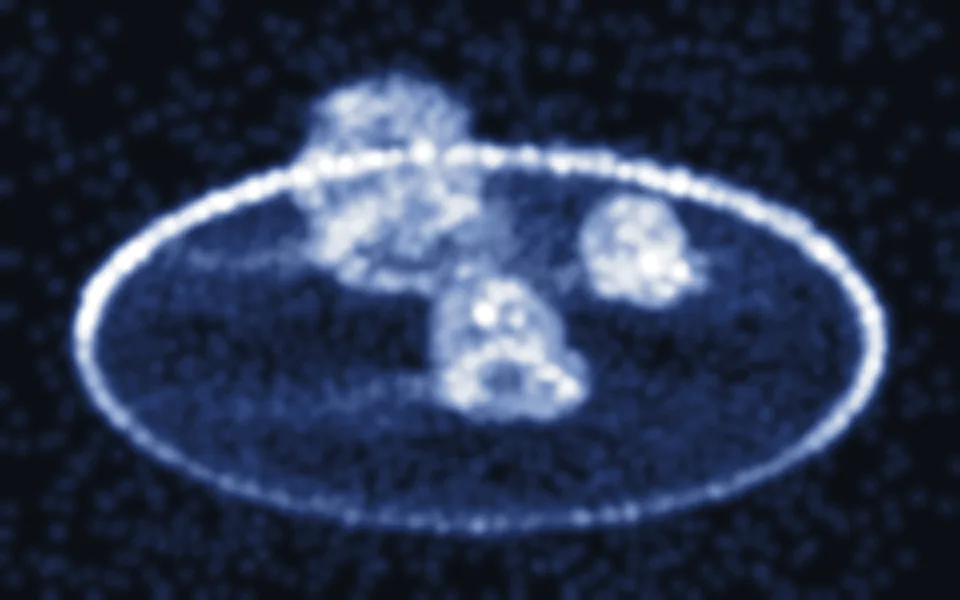
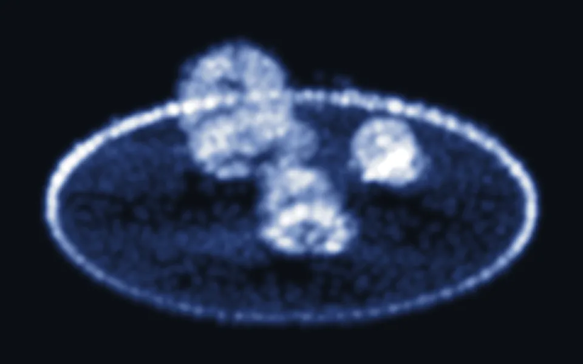

01
Same frame, fewer Gaussians
Drag the divider. Both sides are the same camera path and the same moment, rendered from the two trained models.
02
Measured on one D‑NeRF scene
- Gaussians in the final model
- −22%28,177 → 22,045
- Training time, fine stage
- −11%17 min 31 s → 15 min 38 s
- Test PSNR at 20,000 iterations
- +0.23 dB40.34 → 40.57 dB. Within run-to-run variation, so read it as no loss.
Scene: bouncingballs. Same config, same 20,000 iterations, same RTX 4050 laptop GPU, runs made back to back. One run per method.
03
Where the Gaussians end up
Centres of every Gaussian in each final model, seen from the same angle on the same brightness scale. The baseline never prunes a scene this small, so strays stay scattered through empty space. Ours clears them.


04
Gaussian count during training
Read from the two training logs, every 100 steps.
Baseline Ours
05
How it works
Every 100 iterations, each Gaussian is scored by its accumulated view-space position gradient, a sign of how poorly its part of the scene is still reconstructed. The top quarter by score is densified at a lower threshold, so detail gets more Gaussians sooner, while the middle half follows the standard rule. The bottom quarter is never densified, and its oversized Gaussians are removed. Any Gaussian that has faded below the opacity threshold is pruned at every step, where the baseline only prunes scenes above 200,000 Gaussians.
Limits. Evaluated on one D‑NeRF scene with a single run per method. No ablation yet separates the pruning from the complexity-aware densification.